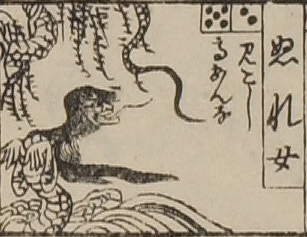

濡れ女；ヌレオンナ，女；オンナ，蛇；ヘビ

ぬれ女。髪を長く垂らし、長い舌を伸ばしている。体は蛇で前脚に人の掌がついている。波間にいる。
出典：親書誌：U426_nichibunken_0082：新版妖怪飛巡雙六；シンパンヨウカイトビマハリスゴロク／日付：2007／資源識別子：U426_nichibunken_0082_0021_0000
Copyright (c)2010- International Research Center for Japanese Studies, Kyoto, Japan. All rights reserved.